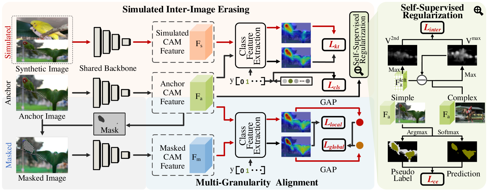

Architecture of Proposed KTSE Approach
We propose a simulated inter-image erasing (SIE) scenario where extra object information is introduced from another paired image. We then strengthen the object localization ability of the network by improving the consequent less activated localization map through learning object knowledge from the anchor image. A self-supervised regularization (SSR) module is also proposed to avoid weakening the anchor activation due to bidirectional alignment and improve the inter-class object boundary recognition for complex images. In addition, we propose a multi-granularity alignment (MGA) module to gently enlarge the object activation to further boost the object knowledge transfer.